Школа разработчиков
(продвинутый уровень)
Организаторы: Пермский сетевой ИТ-университет совместно с ПНИПУ и ГК ИВС
О Группе компаний ИВС
- Системный интегратор
- 29 лет на рынке
- Порядка 10 департаментов, около 500 человек
- Департамент информационных систем, более 150 человек
- Проекты и вакансии в ДИС
Проекты ДИС
В основном работаем в B2G
Проекты ДИС на Ember.js + .NET
на начало 2019 г.
АРМ ТИ
Автоматизация деятельности теловых инспекторов
Внедрено в г. Красноярске
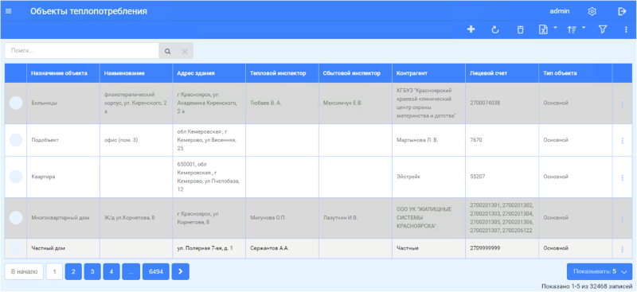ИС "ММЦ"
Многофунциональный миграционный центр
Внедрено в г. Перми
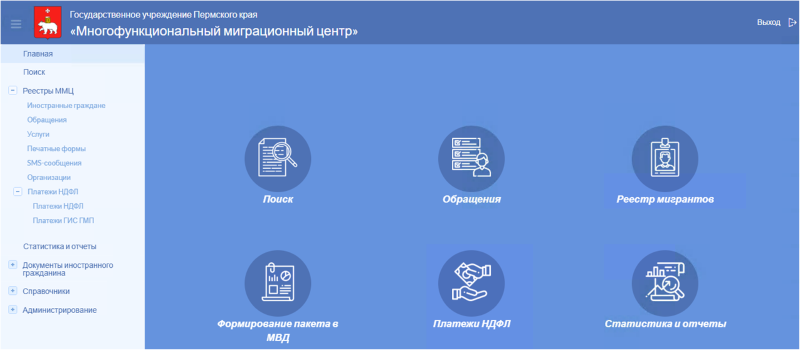ИС "Реестр МСП"
Реестр субъектов малого и среднего предпринимательства
Система для администрации г. Сургута
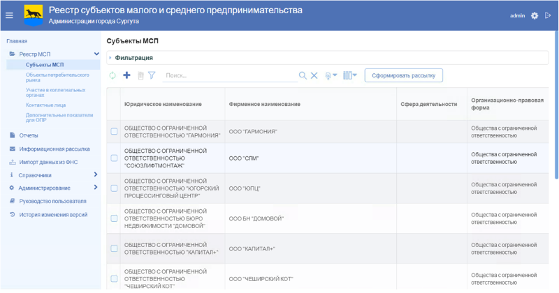ЕАИС "Социальный регистр населения"
Информационная система для соц. защиты
Внедрено в Пермском крае
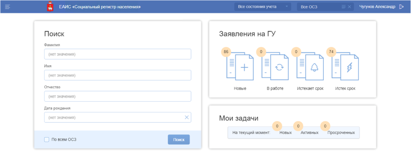Портал ИСОГД
Обеспечение градостроительной деятельности
Внедрено в г. Пермь
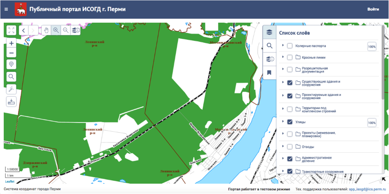ЕВКД
Единый виртуальный кабинет депутата
Внедрено в Пермском крае
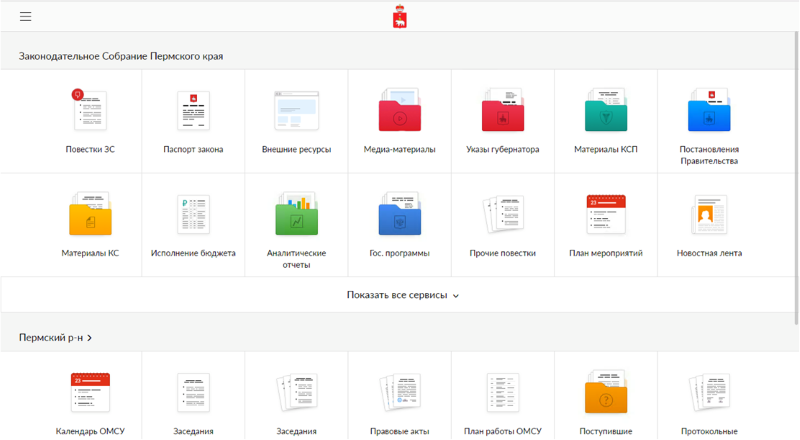Проекты ДИС
В 2019 г. началась разработка еще нескольких информационных систем
О себе
|
План занятия
-
Организация школы:
- Цели школы
- Программа школы
- План занятий
- Формат обучения
- Задания и рейтинг
- Ценность обучения
- Орг. вопросы
-
Контент:
- Архитектура веб-приложений
- Задание на неделю
Цели школы
- Стажировка и трудоустройство в ГК ИВС
- Прокачать скиллы во фронтэнд-разработке и технологиях командной работы
Программа школы
- Модуль 1. Принципы и инструменты веб-разработки
- Модуль 2. Технологии командной разработки
- Модуль 3. Погружение в JavaScript-разработку
- Модуль 4. Разработка веб-приложений на Ember.js и ASP.NET Core
- Работа над командным проектом(ами)
План занятий
- Занятие 1. Принципы и инструменты веб-разработки
- Занятие 2. Командная работа в Git и GitHub
- Занятие 3. Командная работа в Azure Devops
- Занятие 4. Ключевые концепции современного JS
- Занятие 5. Тестирование и отладка JS-приложений
- Занятие 6. Автоматическая сборка и документирование JS-приложений
- Занятие 7. Клиентские JS-фреймворки. Знакомство с Ember.js
- Занятие 8. Разработка REST API-бакенда на .NET Core
- Занятие 9. Развертывание JS-приложений
- Занятие 10. Защита командных проектов. Подведение итогов
Формат обучения
- Flipped Classroms
-
Аудиторные занятия:
- Вводная лекция по теме(ам)
- Разборы заданий
- Ответы на вопросы
-
Самостоятельная работа:
- Ссылки на ресурсы находятся в LMS ИТ-университета
- Учебные материалы находятся на сайте школы
- Задания на неделю
- Закрытая группа в скайпе (ссылка есть в LMS)
Задания и рейтинг
-
Основные задания:
- Задание 1. Создание веб-приложения на основе REST API
- Задание 2. Тестирование сетевого взаимодействия и серверного API
- Задание 3. Cредства командной работы платформы GitHub
- Задание 4. Cредства командной работы Azure DevOps
- Задание 5. Разарботка SPA-приложения на VanillaJS
- Задание 6. Разработка приложения на Ember.js и ASP.NET WebAPI
- Командный проект.
- Задания на неделю по JS и Ember.js
- Рейтинг группы (ссылка есть в LMS)
- Получение удостоверения: все выполненные задания и командный проект
Ценность обучения
- Подбор материалов
- Востребованные знания и умения в ГК ИВС и не только
- Практический опыт, в том числе на основе реальных кейсов
- Обратная связь от практикующих разработчиков
- Возможность пройти стажировку в крупной ИТ-компании
- Возможность "сократить путь" до реальных задач в ГК ИВС
Орг. вопросы
Регистрации, аккаунты
- Регистрация в LMS ИТ-университета
- Добавление в закрытую скайп-группу
- Аккаунт на GitHub
- Анкеты и заявления
- Отметимся :)
Перечень ПО
- Node.js v10.x
- Ember CLI не ниже v3.12
- .NET Core SDK v3.0
- Google Chrome не ниже v77.x
- Visual Studio Code не ниже v1.38 с плагинами:
- Postman не ниже v7.6.x
- Fiddler не ниже v5.x
- Git SCM не ниже v2.23.x
- .NET Framework не ниже v4.5 (для Windows)
- Visual Studio Community 2019 (для Windows)
Орг. вопросы
Ваши вопросы?
Модуль 1. Введение в веб-разработку
- Архитектура веб-приложений, клиент-сервер
- Стек протоколов TCP/IP
- Протокол HTTP
- Клиентские и серверные технологии
- Архитектуры MPA и SPA
- Веб-сервисы, RESTful-сервисы
- Инструменты разработки и отладки
Архитектура веб-приложений
- Архитектура клиент-сервер
- Протокол HTTP
- Веб-серверы
- Веб-сокеты
- MPA vs SPA
- REST API
- OData, GraphQL
Клиент-серверная архитектура
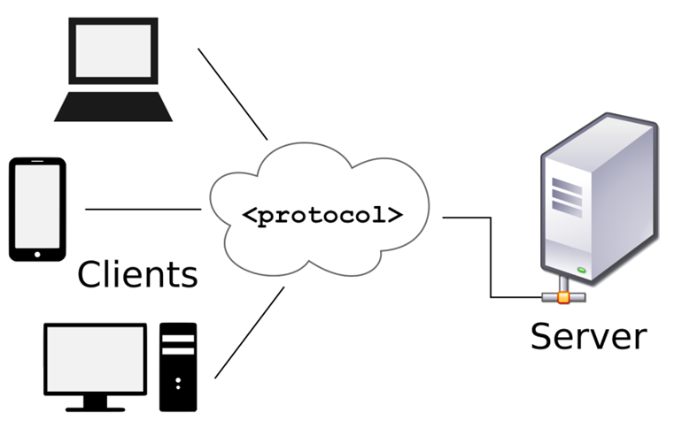Варианты клиент-серверной архитектуры
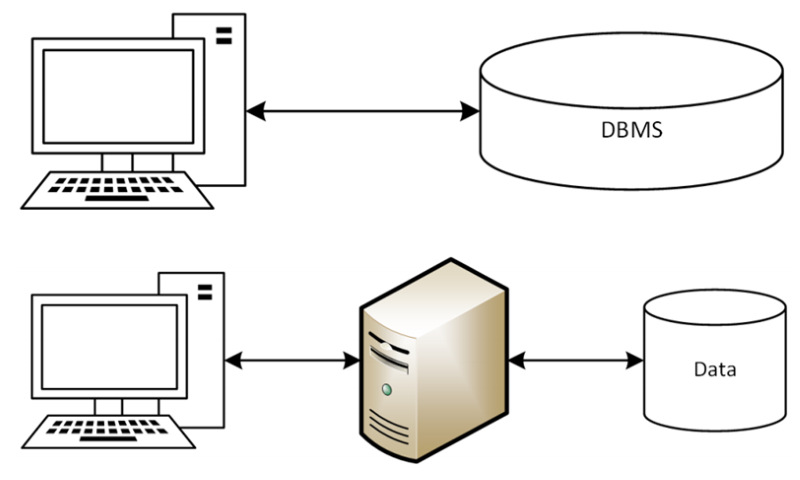Стек протоколов TCP/IP
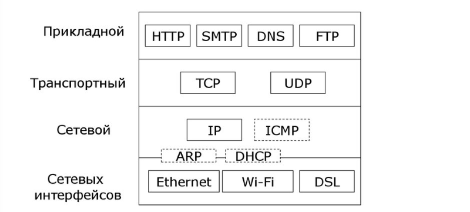Протокол HTTP
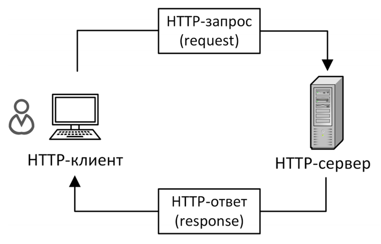Структура HTTP-запроса
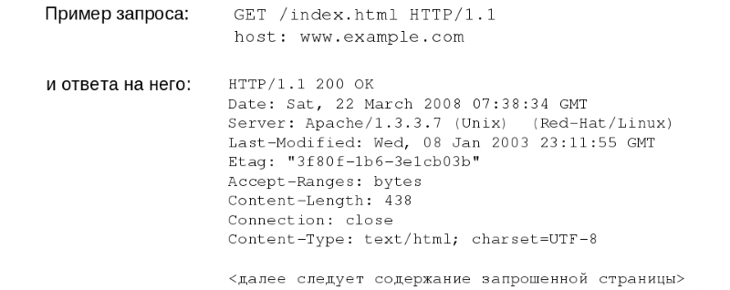Постоянные HTTP-соединения
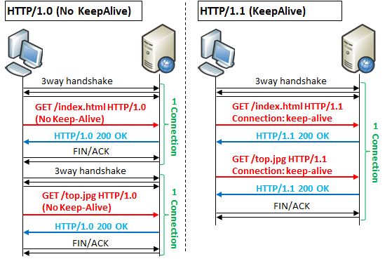Хранение состояния в HTTP
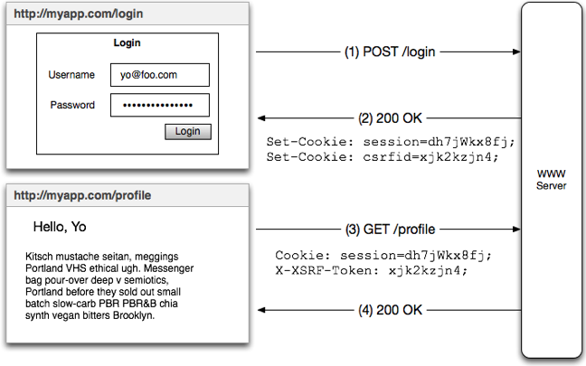Веб-серверы
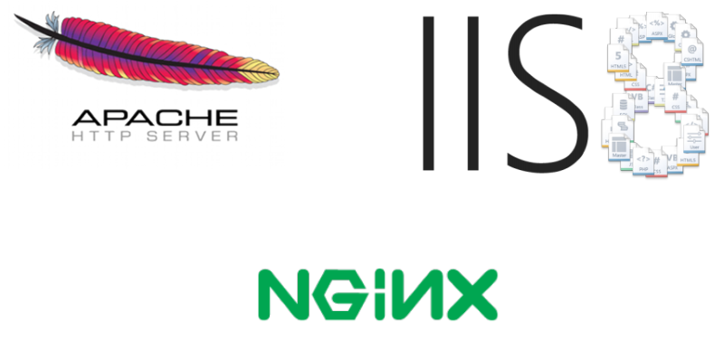Статическое содержимое страниц
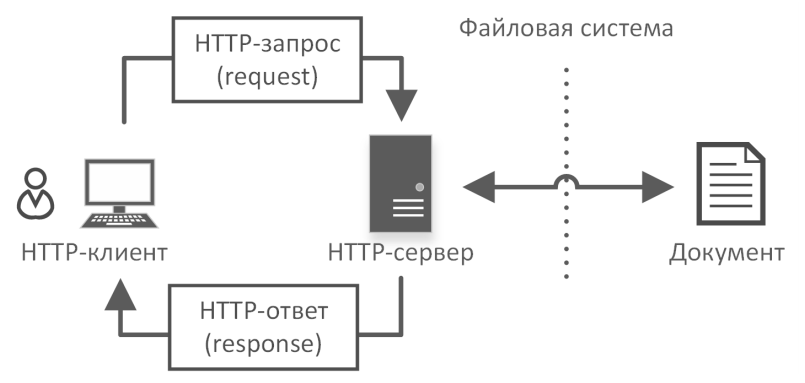Динамическое содержимое страниц
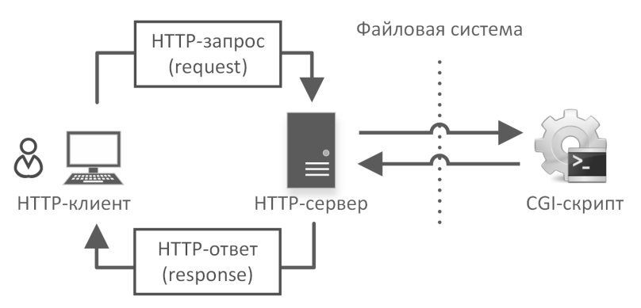Конфигурация PHP в виде модуля
LoadModule php5_module "C:/PHP/php5apache2_4.dll"
PHPIniDir "C:/PHP"
AddType application/x-httpd-php .php
Конфигурация PHP в виде CGI/FastCGI
AddType application/x-httpd-php phtml php
<Directory "c:/php">
Options ExecCGI
</Directory>
ScriptAlias "/php_dir/" "c:/php/"
Action application/x-httpd-php "/php_dir/php-cgi.exe"
HTTPS
- Аутентификация
- Целостность данных
- Шифрование
Как это всё работает вместе
Что происходит, когда в браузер вводится URL и нажимается Enter?
1. Определение IP-адреса через DNS
- Проверка кеша браузера
- Проверка кеша ОС
- ...
- DNS-запрос
2. Формирование и отправка HTTP-запроса
- GET-запрос
- User-Aegent, Cookies,...
3. Обработка запроса и отправка HTTP-ответа
- Поиск обработчика
- Передача управления
- Возврат результата
4. Отрисовка веб-страницы браузером
- Загрузка ресурсов (CSS/JS/IMG)
- Запуск JavaScript
- Отрисовка страницы
- ...
Web Sockets
Так работает HTTP:
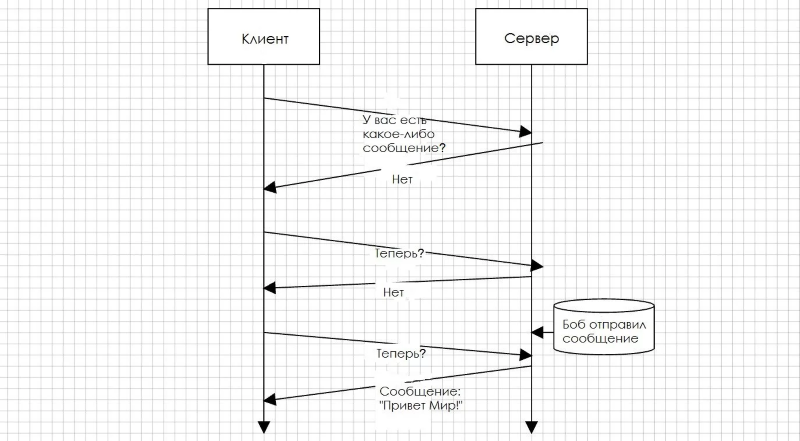Web Sockets
Так работают веб-сокеты:
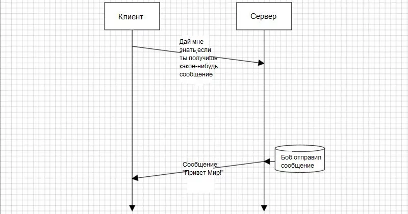